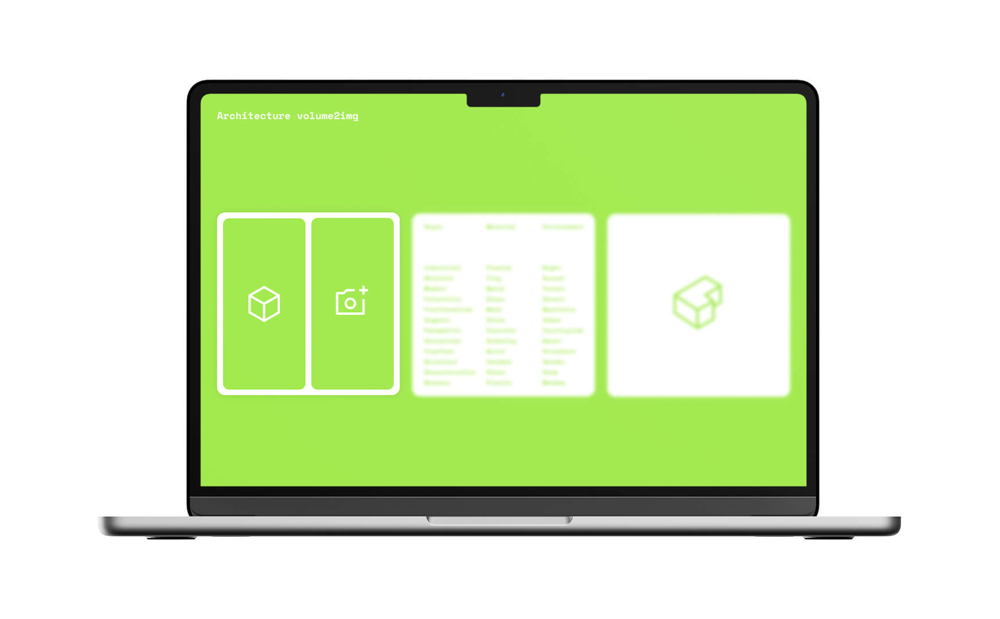
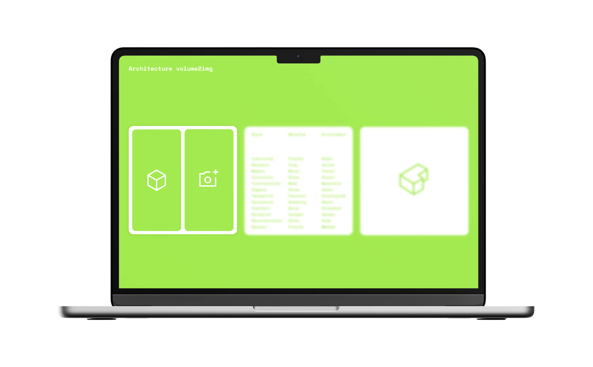
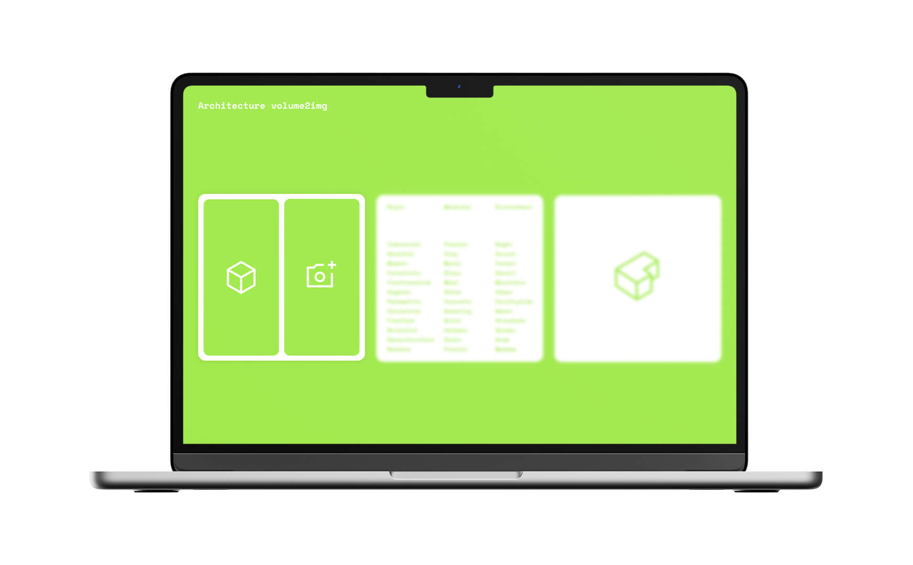
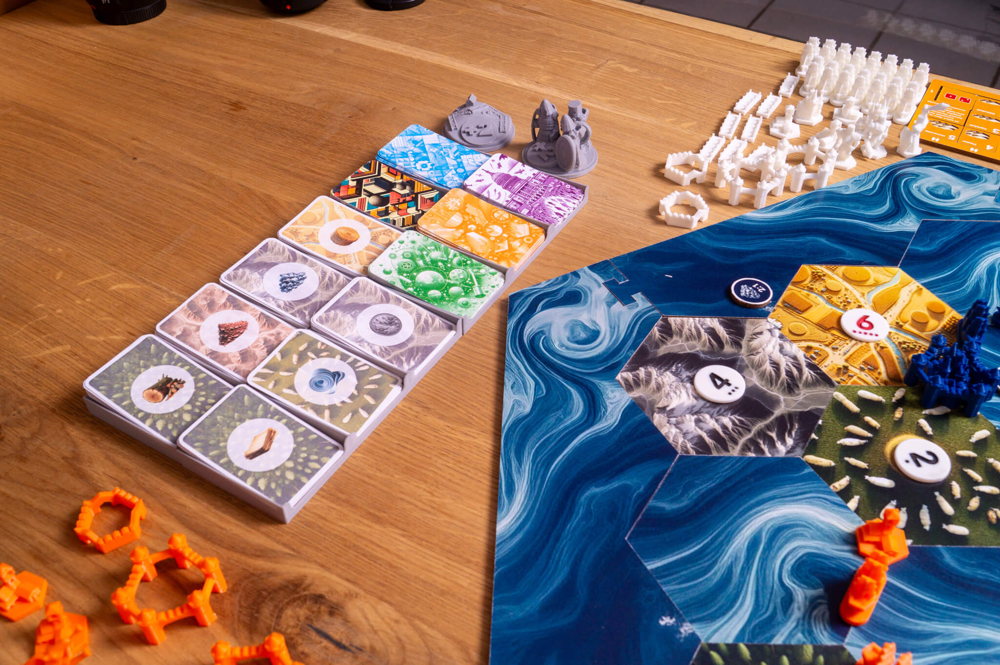
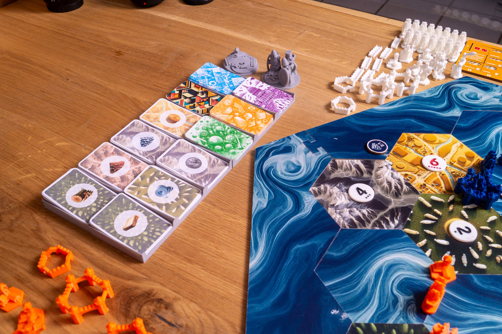

I have an eye for innovative solutions and appealing designs. So far, I have focused on digital projects, but I also have extensive experience in branding and corporate design.
Application for the Master’s Program



 


I was asked to create a large red carpet installation for AAAREA in front of the Alte Oper
in Frankfurt am Main. The project was created while working at the Nordisk office and aimed
to promote the new event platform AAAREA. It ran during Fashion Week in Frankfurt, presenting
many interdisciplinary and collaborative formats to showcase the latest trends in fashion.
The installation was placed on the red carpet of the "Markengala" and attracted the attention of
the guests. With an impressive design, the installation became an eye-catcher.
I had the pleasure of working with Nordisk Büro on the design for Matrix42's "Digital Workspace World 2022" conference. My focus was on creating the key visuals to illustrate the conference's message. The conference provides participants with a platform to engage with experts and delivers answers and strategies for the key questions regarding the digital future of work. For the implementation of the visual, the specified form was translated into a three-dimensional representation.
There are many programs designed to simplify designing for people without a design background. However, users often still need to make many important design decisions. I aim to change that with this project. It focuses on translating the conventional design process into a digital one. The result is a digital tool for designing advertising media. Central to the program is "ViSyn" a gender-neutral agent that guides users through the digital design process. The use of AI models is essential for this implementation, as new AI models are constantly emerging, making it even easier to create with AI. The debate on the impact AI has and will have on design is becoming increasingly intense. In line with this, I have highlighted the advantages that such AI models can have over human-to-human interaction.
The magazine documents the work done in a typography course. Created in collaboration with Nils Trenner, the magazine aims to humorously capture the often stressful semester. Additionally, we wrote two articles for the magazine. The topics are the history of chrome in design and the development of the retro design trend that was just beginning in 2020.
As part of a course, I developed the concept "Think inside the new Box" for ConCon. My project focused on the changes that can result from the use of artificial intelligence. My idea was to
visualize an AI box that houses various AI visuals. The animation of the elements symbolizes the transition from a graphic space to a space with AI elements. In the AI booth, visitors can
experience this for themselves by giving different instructions, like a naturalistic representation of technology, causing the space to change accordingly. Several projections are installed on the stage,
with images gradually changing as the elements become more abstract. Each speaker can customize the stage design individually.
Together with Paul Eßer and Prof. Florian Jenett, I presented the concepts at ConCon 2022 in a booth. The booth we planned and designed showed how AI could change the appearance of ConCon in the future.
Using AI, I created a card game called Eco Guardians. It's a strategic card game where players take on the roles of conservationists and face the challenge of preserving and protecting various ecosystems. The goal is to save valuable animal species and combat human threats by utilizing landscapes, settling animals, and warding off natural disasters. The illustrations are AI-generated. I designed the concept myself, but solved logical issues with an AI language model.
The project Architecture volume2img is a website where users can create a rough volume model of a building in a simple 3D editor. In the next step, a prompt consisting of words related to style, material, and environment is put together. Then, an AI generates an image based on these inputs. Alternatively, a photo of an already built model can be used as input.
In this project, I redesigned the game materials of the board game Settlers of Catan using AI. By carefully crafting the prompts, I achieved a consistent style in the image generation of different landscapes, for example. The figures are 3D-printed from self-created or modified 3D models.
The posters were created in a course where we were to develop a campaign on a topic close to our hearts. My focus was on changing the image of adopting stray dogs. I was inspired by the texts of various dating service
advertisements in designing the posters. My goal was to make the message appealing to motivate further information gathering.
To create the posters, I used 3D-scanned porcelain dogs as models. These were given hair in a 3D software. The clear design aims to remove the pure emotionality from the topic and thus convey a more positive image.
In a course on "Generative Design" I wrote a program that allows painting with one's body. The only requirement is a dark background and a computer camera. The program is designed to ensure interactive, beginner-friendly painting with easy operation that encourages experimentation.
I completed my Bachelor's degree in Communication Design at Hochschule Mainz, gaining experience in branding, editorial design, and digital products.
I have been working creatively for six years, during which I have accumulated experience through my academic education as well as in professional and freelance roles.
Hi, I'm a Communication Designer from Mainz.
I completed my Bachelor's degree in Communication Design at Hochschule Mainz, gaining experience in branding, editorial design, and digital products.
I have been working creatively for six years, during which I have accumulated experience through my academic education as well as in professional and freelance roles.